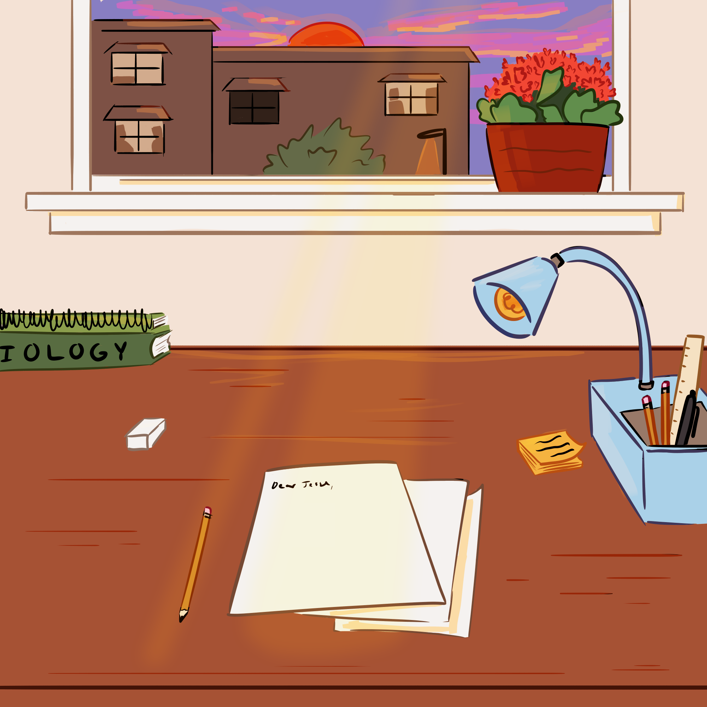

There is a shuffle of paper and the creak of wood-

-as you pull out your chair and sit at your cluttered desk. The hum of your pencil sharpener is almost as familiar of ambiance as the crumple of paper. Soft rays of evening light creep through the blinds, blending into the bright illumination of your desk lamp. The day has passed and all that’s left is a cup of tea and questionable motivation. You’ve been here many times before: staring dully at a piece of paper.
Dear Jesse,
That’s it. That is about as far as you’ve ever got with this. Jesse would hate you for this- but you won’t know that until you actually get a response from them, and that would require you finishing this letter. It’s been years since you’ve talked, and despite how close you were before, there seems to be nothing left but a chasm of crippling silence between you two. This letter, if you actually end up writing it, will be a metaphorical reach across that gap, or maybe just a graceful nosedive into it.
Your pencil taps on the paper. You’ve also been here many times before: indecisive and scared of how to even start. How about starting with the structure, that might help you wrangle your ideas. Maybe you would be more motivated to finish a shorter letter. Your thoughts are complicated but revising them into shorter words seems more practical and impactful. But a prickle of guilt follows that idea, after all this time maybe they deserve a more dignified letter. There’s a long, long epic that’s been pacing around in your mind, and maybe pouring your heart out onto the paper is a better idea.
Audio by: hargissssound on freesound.org